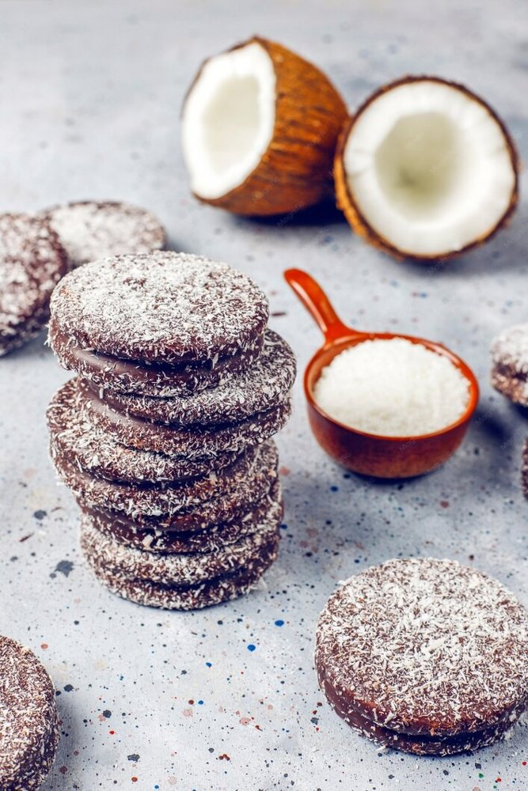

Doces · Biscoitos
Biscoitinhos de chocolate e coco

Ingredientes
- 1 ¼ xícara de margarina
- 1 xícara de açúcar
- 1 ⅔ xícara de farinha de trigo
- 1 colher (sopa) de fermento em pó
- ⅓ xícara de cacau em pó
- 1 pitada de sal
- 1 xícara de chocolate em pó
- 3 pacotes pequenos (150 g) de coco ralado
- ¼ xícara de água fervente
- 1 colher (chá) de café solúvel já preparado
Modo de preparo
- Numa tigela, coloque a margarina e o açúcar, e bata até obter um creme leve e fofo.
- Em outra tigela, peneire juntos a farinha, o fermento, o cacau, o sal e o chocolate em pó. Adicione o coco e misture bem.
- Numa xícara, misture a água com o café solúvel.
- Adicione ⅓ dos ingredientes secos peneirados à mistura de margarina e bata na batedeira até ficar bem homogênea. Junte ⅓ da água misturada com o café solúvel e bata novamente todos os ingredientes. Vá acrescentando os ingredientes dessa maneira até terminar de bater toda a mistura. Deixe descansar por 30 minutos na geladeira. Preaqueça o forno em temperatura média (200 °C).
- Vá pegando colheradas de massa e, com as mãos, forme bolinhas do tamanho de uma noz. Arrume as bolinhas em círculos numa assadeira, deixando um espaço de 5 cm entre elas. Leve ao forno preaquecido para assar. Retire os biscoitos do forno, deixe esfriar e congele.
Observação
Para preparar o café solúvel pedido na receita, utilize uma parte de café solúvel e duas partes de água fervente; misture bem e utilize. O livro não informa o tempo de forno: vigie até dourarem. Congelamento: cubra os biscoitos com plástico e leve ao freezer até congelarem; passe-os para um saco plástico, retire o ar e vede bem; etiquete e congele. Descongelamento: em temperatura ambiente por 1 hora.